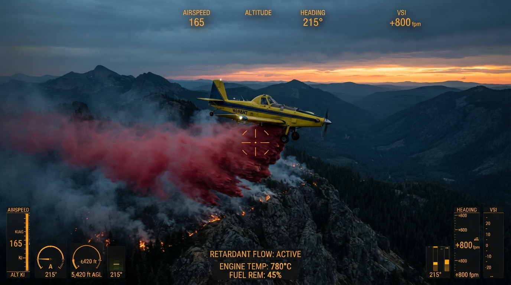

STITCH MCP SYNCHRONIZATION
Diseño Activo: Light Aeronautical Dossier
Pantalla principal y recursos sincronizados desde Google Stitch MCP (`projects/13694640903286686461`).
 DESKTOP • LIGHT EDITION (2560x13274)
DESKTOP • LIGHT EDITION (2560x13274)
LTC Luis Carrero - Portafolio Ejecutivo AT-802 (Light Edition)
Screen ID: ce3f045c7f4f4cc390c0340d2ccf31bc
Paleta clara de alta precisión estilo manual técnico y carta aeronáutica (`#FFFFFF` / `#F8FAFC`), tipografía `Space Grotesk`, `Inter` y `JetBrains Mono`, acentos ámbar (`#D97706`), rojo retardante (`#DC2626`), azul HUD (`#0284C7`) y verde esmeralda (`#059669`).
Asset Fotográfico Principal
Screen ID: f44ac295a324467c803581e750d1f8d1 (1376x768 PNG)

assets/at802-aerial-firefighting-hero.png
Ver original →